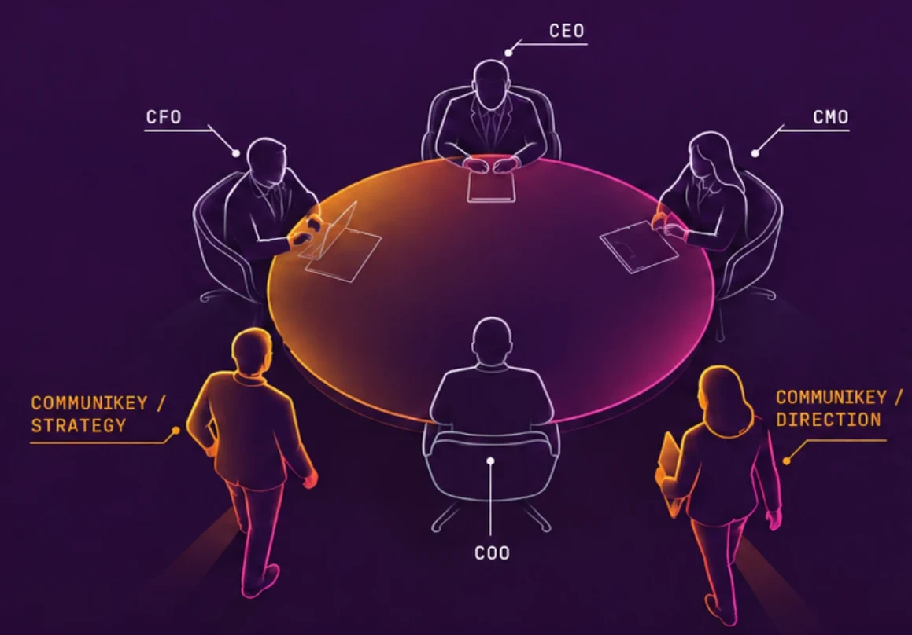

Iknosys · ristorazione
Un’azienda conosciuta soprattutto per la tecnologia, con una competenza sulla ristorazione molto più ampia del prodotto.
Dalla tecnologia a una visione più ampia della ristorazione.
Da fornitore a punto di riferimento.
Strategic Intelligence · Direction · Systems · Development
Com & Key Experience affianca imprenditori e aziende quando l'obiettivo è troppo importante per essere ridotto a una campagna, un sito, un software o una singola consulenza.
Entriamo nel tuo contesto. Ascoltiamo, raccogliamo informazioni, colleghiamo ciò che normalmente rimane separato. Poi costruiamo una lettura, definiamo una direzione e la trasformiamo in un progetto concreto.
Avere una meta non significa conoscere già la strada.
Tra il punto in cui si trova oggi la tua impresa e quello in cui vuole arrivare esiste un contesto fatto di persone, conoscenze, numeri, decisioni, abitudini, vincoli, opportunità e segnali che spesso vengono osservati separatamente.
Prima di capire come muoversi, bisogna rendere leggibile il punto di partenza.
È qui che iniziamo a entrare nell'impresa: ascoltiamo, raccogliamo, analizziamo e mettiamo in relazione ciò che già esiste, facendo emergere informazioni e conoscenze distribuite tra persone, documenti, strumenti e conversazioni.
Più dati raccogliamo, più il punto di partenza diventa leggibile.
È qui che entriamo davvero in gioco NOI.
Attraverso il nostro ecosistema ZirkonIA™, basato sulla Tecnologia Second Brain e animato da intelligenze artificiali, trasformiamo ciò che l'impresa sa in conoscenza strutturata, persistente e interrogabile.
La organizziamo, la colleghiamo al contesto e la utilizziamo per far emergere dai dati le direzioni strategiche più solide, valutarle nella realtà dell'impresa e capire quale merita di diventare progetto.
Così la scelta non nasce da un'intuizione estemporanea, da una moda o dall'idea creativa del momento, ma da una comprensione documentata dell'impresa, delle sue volontà e della realtà in cui si muove.
E quel lavoro non si perde: i dati raccolti rimangono all'azienda, diventano patrimonio e continuano a sostenere analisi, decisioni e nuove evoluzioni nel tempo.
La direzione non la inventiamo.
La Facciamo Emergere Dai Dati.
Ogni impresa arriva da noi con una storia.
Ci sono decisioni prese anni fa, intuizioni, successi, errori, persone, abitudini, numeri, ambizioni e idee che non hanno ancora trovato una forma.
E quasi sempre c'è anche una necessità immediata: qualcosa da risolvere, migliorare o costruire. Noi partiamo da lì, ma non ci fermiamo alla richiesta.
Ascoltiamo abbastanza a lungo da capire cosa sta cercando davvero di diventare l'impresa. Ricostruiamo il contesto, colleghiamo ciò che emerge e restituiamo una lettura. La confrontiamo con te. La correggiamo insieme.
Ed è da quell'incontro che nasce la direzione.
Prima della strategia viene il contesto.
Perché una strategia costruita senza conoscere la storia dell'impresa può essere corretta sulla carta e completamente sbagliata per chi deve viverla.
Non arriviamo con una destinazione già decisa.
Facciamo domande, ascoltiamo le risposte, cerchiamo ciò che ritorna, ciò che manca, ciò che crea tensione e ciò che sembra voler emergere.
A volte il punto di partenza è molto chiaro. Altre volte esiste soltanto la sensazione che la forma attuale dell'impresa non sia più sufficiente per ciò che vuole diventare. Anche quello è un punto di partenza.
E ciò che impariamo non viene perso.
Con ZirkonIA™ possiamo trasformare conversazioni, decisioni e conoscenza dell'impresa in una memoria persistente che continua ad accompagnare il progetto.
Com & Key Experience entra nei progetti come un reparto esterno di intelligence e sviluppo.
Partiamo da ciò che vogliamo capire.
Una prima conversazione per capire non quello che vuoi comprarci, ma dove vuoi arrivare.
Obiettivi, situazione attuale, persone, vincoli, storia, numeri, opportunità, problemi, percezioni. Non cerchiamo subito la risposta: costruiamo il contesto per fare le domande giuste.
Raccogliamo, organizziamo e confrontiamo le informazioni, cercando relazioni che restano invisibili.
Costruiamo una nostra interpretazione dell'impresa e del problema, poi torniamo da te. L'intelligence non serve a dimostrare che abbiamo ragione: serve a vedere meglio insieme.
Solo quando il problema è chiaro costruiamo il progetto. Da lì non facciamo più una consulenza: costruiamo un sistema.
Priorità, obiettivi, infrastrutture, persone, competenze, tempi, esperimenti, metriche, azioni.
Ascoltiamo la tua organizzazione, studiamo il contesto, osserviamo il mercato, raccogliamo segnali. Poi restituiamo una lettura.
Quando entrambi vediamo la stessa destinazione, possiamo cominciare a costruire la strada.
Prima di progettare qualcosa, dobbiamo capirne abbastanza.
Strategia, tecnologia, AI, marketing, design, contenuti, processi e persone diventano strumenti di un unico sistema costruito intorno al tuo obiettivo.

Al centro ci siamo noi: ascoltiamo, analizziamo, progettiamo, coordiniamo e manteniamo la direzione.
Intorno, attiviamo le competenze necessarie al progetto: non perché dobbiamo venderle tutte, ma perché dobbiamo poterle utilizzare quando servono. Se il progetto richiede competenze verticali, attiviamo i professionisti giusti.
Our intelligence infrastructure
Il nostro ecosistema proprietario, sviluppato da Com & Key Experience, per trasformare conoscenza, conversazioni e decisioni in memoria attiva.
Premi Invio: diventa parte della memoria dell’impresa.
Le intelligenze artificiali oggi hanno un grandissimo potenziale e una vastissima conoscenza, ma non sanno nulla della tua impresa.
Nel nostro lavoro ogni parola aggiunge conoscenza.
Per evitare che quel patrimonio si disperda, abbiamo progettato e sviluppato ZirkonIA™: il nostro ecosistema proprietario capace di trasformare riunioni, conversazioni, documenti, procedure e decisioni in una base di conoscenza persistente, collegata e interrogabile.
Una memoria che continua a crescere: l'AI non parte più da zero, ma dalla storia reale dell'organizzazione.
Noi Insegniamo all'AI a
conoscere la tua azienda.
ZirkonIA™ nasce dentro Com & Key Experience ed è uno degli strumenti proprietari con cui svolgiamo il nostro lavoro di intelligence. Ci permette di ricordare, collegare e interrogare ciò che impariamo durante il percorso.
E quando questa capacità può diventare strategica anche per l'organizzazione, l'ecosistema può essere implementato come asset dedicato dell'impresa.
Ogni collaborazione comincia da una necessità concreta. Il nostro lavoro è capire cosa c'è dietro quella richiesta e costruire, insieme all'impresa, una direzione capace di lasciare qualcosa che continui a produrre valore nel tempo.
Dalla tecnologia a una visione più ampia della ristorazione.
Da fornitore a punto di riferimento.
Dalla gestione quotidiana alla visione di lungo periodo.
Da valore formativo a sistema di comunicazione.
Da presenza episodica ad asset in continua evoluzione.
Dal passaparola a una comunicazione riconoscibile.
Da idea ambiziosa ad accademia riconoscibile.
Non serve che tu abbia già la risposta.
Serve che ci sia qualcosa di davvero importante per te da meritare una lettura più profonda.
Se stai affrontando un passaggio significativo della tua impresa, hai ambizioni importanti e cerchi alleati strategici capaci di entrare nel problema con te, leggere il contesto e costruire una direzione, allora potremmo essere veramente una risorsa importante!
Adesso raccontaci la tua storia.
Scrivici su WhatsApp e raccontaci, anche con un vocale, chi sei, dove si trova oggi la tua impresa e dove vuoi portarla.
Non serve una presentazione preparata. Ci interessa capire la tua storia, cosa vuoi costruire e perché questo momento è importante.
Ascoltiamo personalmente ogni richiesta
communikeyexperience@gmail.com
Dove vuoi portare la tua impresa? Raccontacelo in una conversazione.
Candidati per una call →